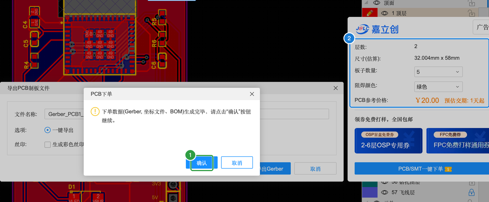
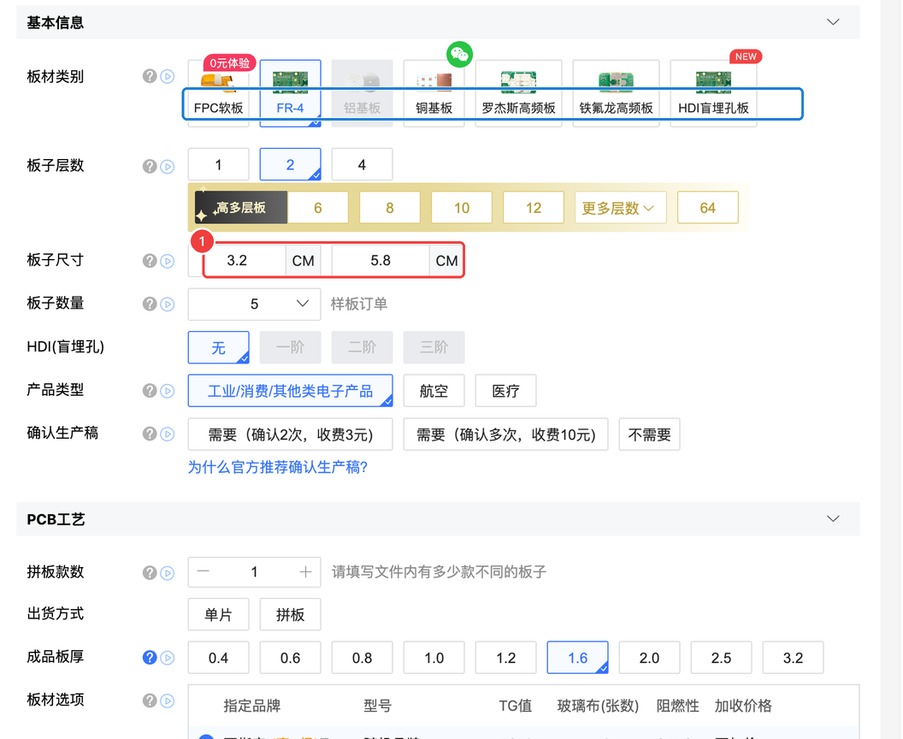
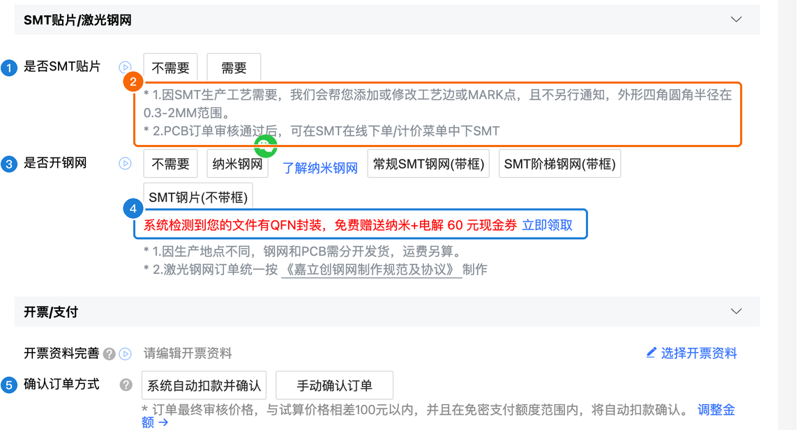

B-4 导出与 SMT 下单
导出文件、跳转下单和案例 A 完全一样，这一页只简单回顾，重点讲 SMT 贴片：为什么这块板子推荐让工厂贴、SMT 订单要在什么时候下、上传 BOM 和坐标后要核对什么——尤其是贴片方向。
B4.1 导出制造文件（回顾 A-10）#
步骤和 A-10 一样：
导出 BOM 后打开检查一下，本案例应该是 14 行：
- J1 排针不在 BOM 里：因为 B-2 把它设成了「加入BOM = 否」，工厂不会贴它，我们自己焊。
- 每一行都有供应商编号（C 编号）。没有 C 编号的行，SMT 时工厂不知道该用什么料。
- BOM 里会显示 LED4 那颗红灯的 C 编号 C2286。器件标准化面板的那个“属性不匹配”警告（B2.9）不影响 BOM 和贴片。
B4.2 PCB 下单（回顾 A-10）#
「导出」→「PCB制板文件(Gerber)…」→「PCB下单」，提示“下单数据（Gerber、坐标文件、BOM）生成完毕”，点「确认」：

浏览器打开嘉立创的 PCB 下单页，尺寸自动识别为 3.2 × 5.8 cm：

所有参数的含义见 A-10 的说明表，本例全部和案例 A 一样：2 层、5 片、FR-4、1.6 mm、绿色阻焊……实测价格同样是 ¥20，另加默认勾选的“品质赔付服务”¥10（可以改成“按标准合同常规处理”省掉）。
B4.3 下单页的 SMT 贴片区域#
往下滚到「SMT贴片 / 激光钢网」这一栏：

SMT 贴片 / 激光钢网 / 开票支付
| 编号 | 参数 | 含义（大白话） | 本例 | 要不要改 |
|---|---|---|---|---|
| 1 | 是否SMT贴片 | 不需要 / 需要。选“需要”表示你打算让工厂把元件贴好 | 截图时为“不需要” | 按旁边的说明，SMT 在 PCB 审核通过后另外下（B4.5） |
| 2 | 说明 | ① 因 SMT 生产工艺需要，工厂可能会帮你添加或修改工艺边、MARK 点，且不另行通知，外形四角圆角半径在 0.3~2 mm 范围；② PCB 订单审核通过后，才能在「SMT在线下单 / 计价」菜单里下 SMT | 本例圆角 2 mm，在范围内 | — |
| 3 | 是否开钢网 | 钢网是刷锡膏用的钢片。让工厂贴片时一般不需要在这里单独开；自己用锡膏焊贴片元件时才需要 | 不需要 | 自己焊贴片元件时 |
| 4 | QFN 现金券提示 | 系统识别到 QFN 类封装送的钢网优惠券 | — | 不用管 |
| 5 | 确认订单方式 | 系统自动扣款并确认 / 手动确认订单 | 默认是自动扣款 | ⚠️ 建议改成手动确认（A-10 讲过） |
B4.4 为什么这块板子推荐 SMT#
- 模组的焊盘在模组底部和侧边，中间还有一块散热焊盘，手工焊难度很大；
- 16P Type-C 的引脚间距只有零点几毫米，非常容易连锡；
- 电阻电容是 0603，比芝麻还小。
所以零基础强烈建议让工厂贴，到手只焊一个排针（甚至不焊也能用）。本案例的扩展库元件有 3 种：模组 U1、Type-C USB1、彩灯 LED1~3，其余都是基础库。扩展库元件贴片时通常会多收一笔换料费，具体多少以 SMT 下单页显示为准。
B4.5 SMT 下单的完整流程#
本教程只操作到 PCB 下单页、没有提交订单，所以下面的 SMT 页面没有截图，按流程说明。界面可能变化，以嘉立创网站实际显示为准：
- 先下 PCB 订单：在 PCB 下单页确认参数，提交并付款。
- 等 PCB 审核通过：嘉立创会检查你的 Gerber 文件，通过后订单状态会更新（有问题工程师会联系你）。
- 下 SMT 订单：在嘉立创网站（或嘉立创下单助手）的「SMT在线下单 / 计价」里选择刚才那个 PCB 订单，选择贴片面（本例只有顶层有元件）和贴片数量（可以只贴其中几片）。
- 上传 BOM 和坐标文件：用 B4.1 导出的 BOM 和坐标文件；也可以从编辑器器件标准化面板的「嘉立创SMT备料下单」把清单带过去。
- 核对元件匹配：页面会把 BOM 每一行和嘉立创的库存一一对应。逐行确认 C 编号、型号、封装一致；看看有没有缺货的、被标成扩展库的，以及扩展库费用。
- 核对贴片方向（最重要！）：页面会显示一张元件贴在板子上的预览图，逐个检查有方向的元件（见下表）。方向不对要在页面上调整或联系工程师。
- 确认费用并支付：PCB 费 + SMT 工程费 + 元件费 + 可能的扩展库换料费，一切以页面显示为准。
哪些元件要特别核对方向#
| 元件 | 方向标记 | 贴反了会怎样 |
|---|---|---|
| U1 模组 | 天线一端朝上板边；1 脚标记 | 转了 180° 的话天线跑到板子里面，而且电源脚接错，可能直接烧 |
| LED1~3 彩灯 | 5050 灯的一个角有缺角或标记，要和封装丝印上的 1 脚标记对上 | 电源和数据脚错位，灯不亮甚至损坏 |
| LED4 指示灯 | 正负极（封装上的极性标记） | 不亮（LED 反向不导通） |
| D1 二极管 | 元件上有一条色环 = 负极，应在 VLED 一侧 | 彩灯没电 |
| U2 稳压芯片 | SOT-223 的大散热片只有一个方向放得上 | 一般不会错，看一眼即可 |
| 电阻、无极性电容、按键 | 无方向 | — |